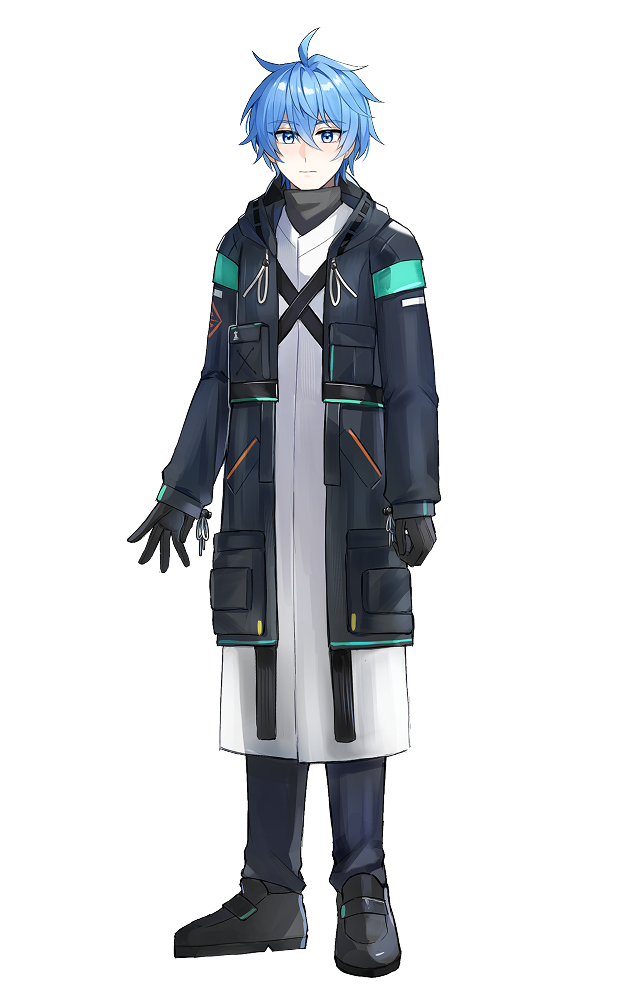
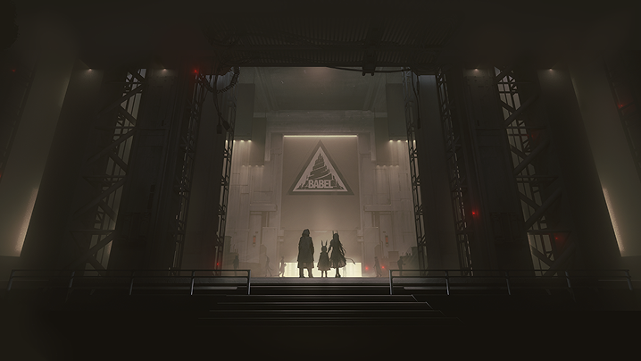
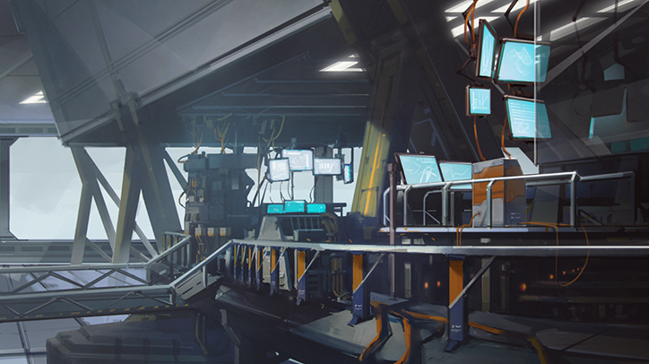
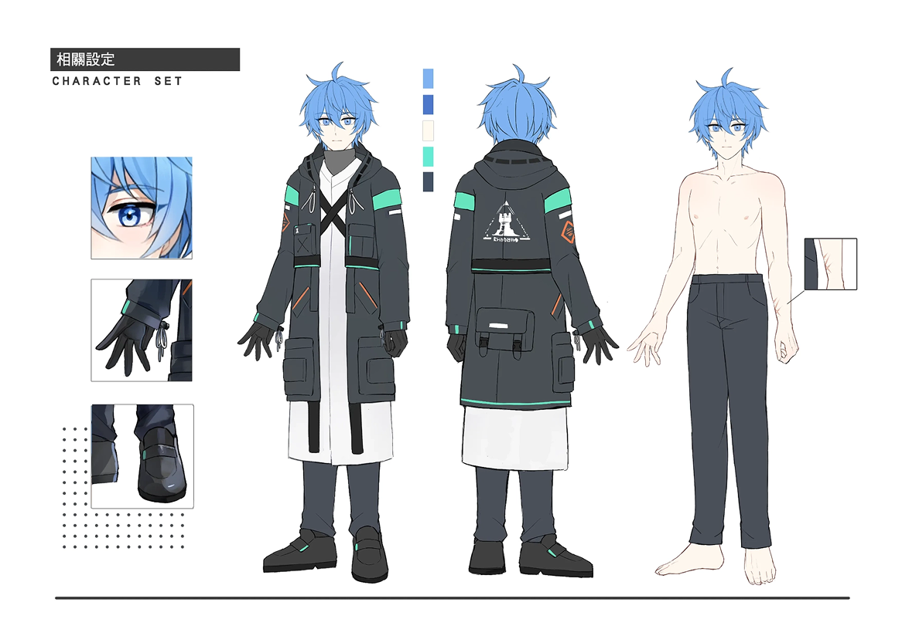
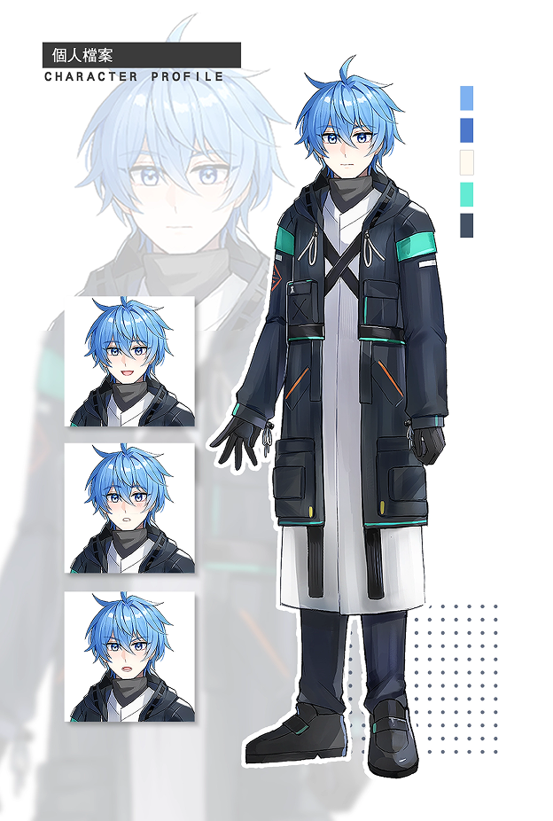
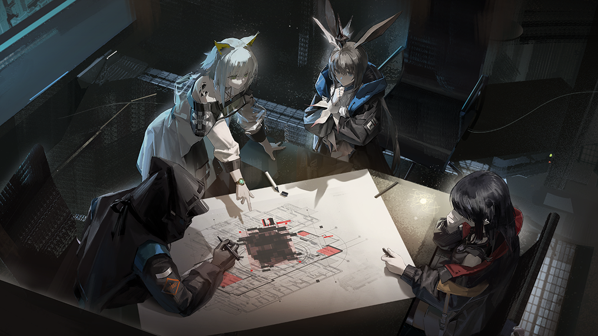
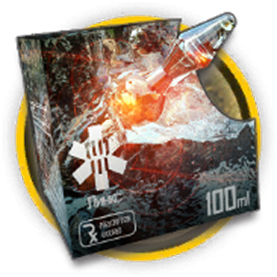
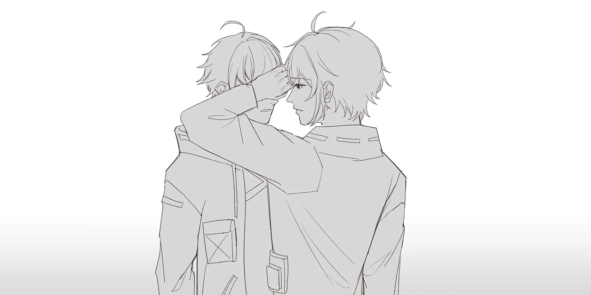
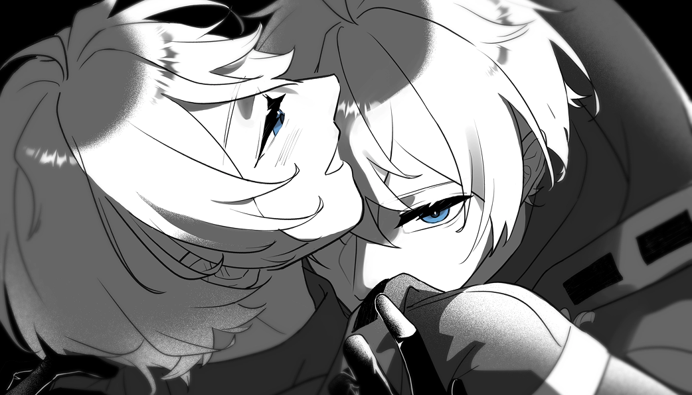

DOCTOR
Dr.宇
Trust & Guard
01簡介Profile
幹員們眼中平易近人的戰術指揮官，外人眼中的有些生人勿近的合作對象，總是掛著笑容且待人親切的「博士」。
02基礎資料Information
- 性別
- 男
- 戰鬥經驗
- 未知
- 出身地
- 未知
- 生日
- 09 月 24 日
- 種族
- 未知
- 身高
- 167 cm
- 礦石病感染情況
- 未知
03綜合體檢測試Evaluation
04臨床診斷分析Analysis
體質極為特殊及需保密因素，體檢相關內容僅限醫療部、凱爾希•思衡托、阿米婭、魔王等人持有及被新羅德島系統ROOTS存取管理中。
05檔案Record
FILE 01
檔案資料一
他對於在石棺醒來並被救起前的事情忘掉了許多，零碎的片段總是和部分幹員提及的印象在他的夢中漸漸拼湊再到忘卻和想不起來為止。
但夢總是會帶來好的事物的，一個名字。
——臨宇

BABELFIG. 02他只將這個名字作為巴別塔及前文明時期的自己的代稱。
FILE 02
檔案資料二
對他而言規律的作息和幹員多相處，是他在羅德島時除了繁重的工作和會議外能做到的事情。
在對待幹員們時會露出溫和的笑容，對年幼的幹員和在羅德島上接受治療的年幼的感染者的時候，則是會成為他們之中忙碌的兄長的存在。
但當對象變成了羅德島的公開領袖的阿米婭的時候，他會露出他人不常見過的表情許久，要說平常他人和博士接觸時換表情的時間的話，都是非常短暫且難以看出的。
FILE 03
檔案資料三

FIG. 04「可露希爾，妳在做什麼？」
「當然是給博士你做個紀錄啦，防止你說擔心自己會不會忘掉羅德島的一切的錄影！」
看著眼前的血魔這麼熱情的告訴他，他只是苦哈哈的回應她的熱情。
「我絕對不會忘記的，因為我答應了一個人會一直一直記住的。」
懷揣著不確定性而顫抖的聲音，還是堅定的說出來了，他臉上的表情也變得有些僵硬和失落的樣子，直到那一聲「喀嚓」的聲音後，他也沒阻止對方如此不好的行徑，只是馬上轉換好心情後，向對方可否留一張相片讓他保存起來而已。
只是想看看自己現在的表情，或許也不賴吧。
06設定圖Design

⤢ 點擊放大
⤢ 點擊放大07設定描述與個性Personality

FIG. 05前文明傾向於追求效率和生命存沒之利益研究者，對於項目的合作伙伴只有利害得失的關係與情感，夥伴代稱他為預言家。
巴別塔時期較冷靜且少有表情，善於實際行動作為行事風格，該時期的表情偏向空洞無神些，生理上有些微呼吸疾病和創傷後壓力症候群。
羅德島時期已經忘卻巴別塔的事情了，初回羅德島時因為事務繁忙造成的疲勞轟炸和壓力症候群的疊合下，過度使用了理智藥劑導致手腕的充滿了使用過量的針孔傷痕，現在因適應許多後治療至只會留下細微的疤痕了。
現與羅德島公開領導人交往中，即便那些溫柔的一面也是幹員中常聽到的，但只有和領導人小姐相處時那些與成熟穩重且溫柔的形象不符的表現也是他的另一面。
08設定其他秘密Secrets
- 01
記憶因沉眠於石棺帶來的傷害而遺忘了大半，稍微想起部分片段時會有些不適的症狀。
- 02
不論何時都是一副笑臉的模樣，偶爾會不經意的表現出其他少見的表情。
-
03
手腕間的針孔痕跡為理智劑使用過度留下的，現已治療至只剩淺淺的疤痕。

- 04
會對年幼的幹員們或是醫療部的患者們，展現自己那如同兄長般無微不至的關心，也會適度的掌握分寸和距離。
- 05
常常因為幹員們送的禮物而不知如何處理而苦惱，有用處的基本上會放在自己的辦公室置物區中。
- 06
似乎過於熟悉阿米婭，常會無意識的變成行動派，當只要有其他幹員們看出時才會意識到自己的現在的行為。
- 07
酒量只有一杯半，一超過就會躺平睡著。
-
08
身上偶爾會有和阿米婭同居時出現淡淡的味道，有當過他的助理是那些嗅覺敏銳的種族的幹員們時似乎都會聞到。
FIG. 06
09設定水仙Selfcest

⤢ 點擊放大
⤢ 點擊放大